.luca-not-dead
history
Luca Prodan 1970s Argentina 1987 Argentine music was a musician and poet born in Italy, but primarily known for his work in the Argentine music scene. He was born in Rome in 1953 and moved to England at the age of 11, where he attended high school and later Cambridge University, where he studied English literature.
In the 1970s, he moved to Argentina and became the leader of the rock band Sumo, one of the most influential bands of the Argentine music scene of the time. Sumo fused several musical genres, such as rock, reggae, and punk, and Prodan was a talented and charismatic lyricist who helped define the band's sound.
However, Prodan also struggled with addiction and mental health issues, and passed away in 1987 at the age of 34 due to respiratory failure. Despite his short career, Prodan left a lasting mark on Argentina music and is remembered as one of the most influential artists of his generation.
sumo
Sumo was an Argentine rock band formed in 1981 by singer and songwriter Luca Prodan. The band was made up of musicians from different backgrounds, including a member from New Zealand, one from the United States, and several from Argentina. Sumo blended several genres, such as rock, reggae, and funk, and often sang in English.
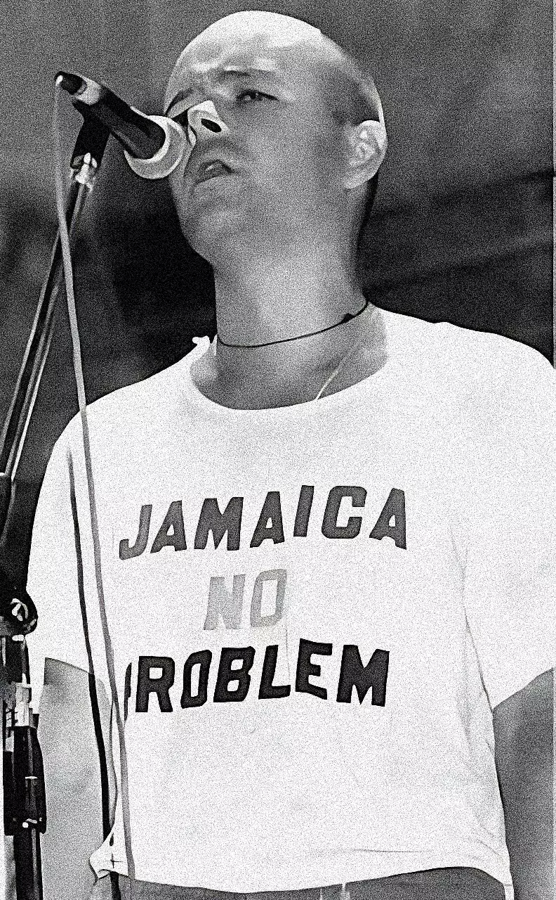
The band achieved fame in Argentina and other Latin American countries, and their music influenced many subsequent artists. However, the band's career was short-lived due to Prodan's untimely death in 1987.
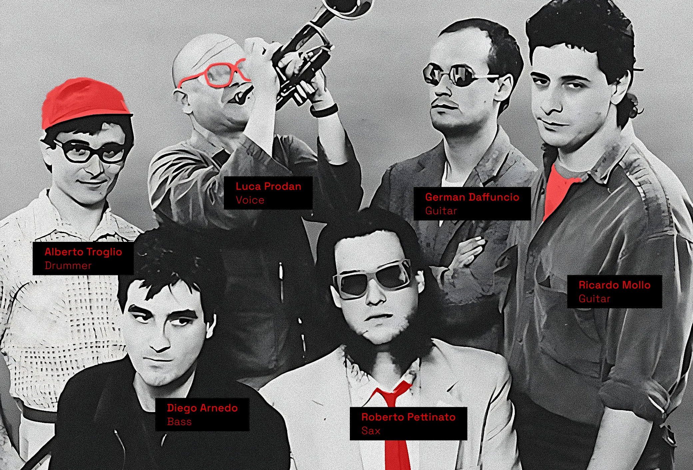
members definitive grouping
members definitive grouping
- Alberto Troglio - Drummer
- Luca Prodan - Voice
- German Daffuncio - Guitar
- Ricardo Mollo - Guitar
- Diego Arnedo - Bass
- Roberto Pettinato - Sax
discography

gallery
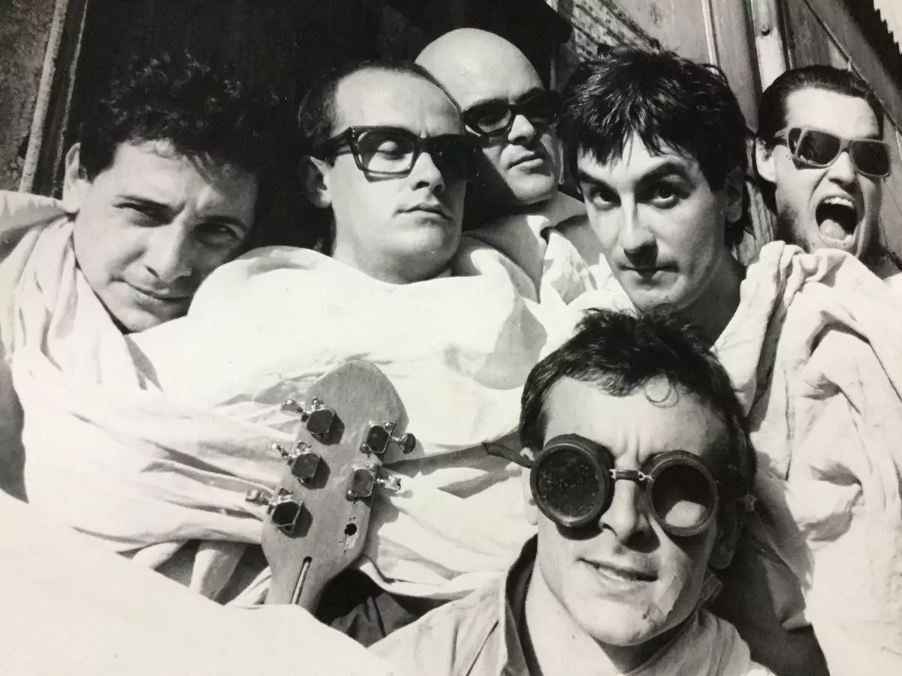

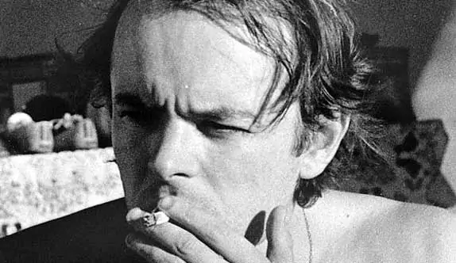
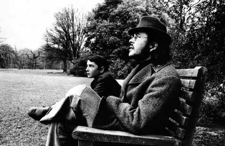
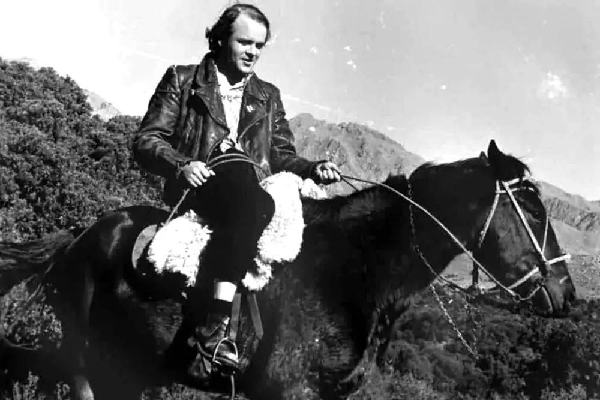

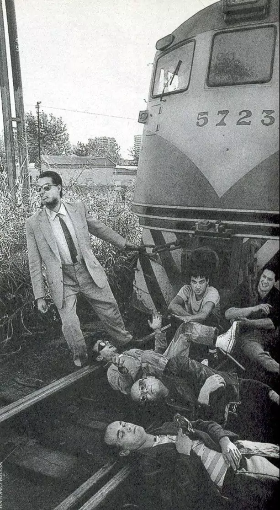
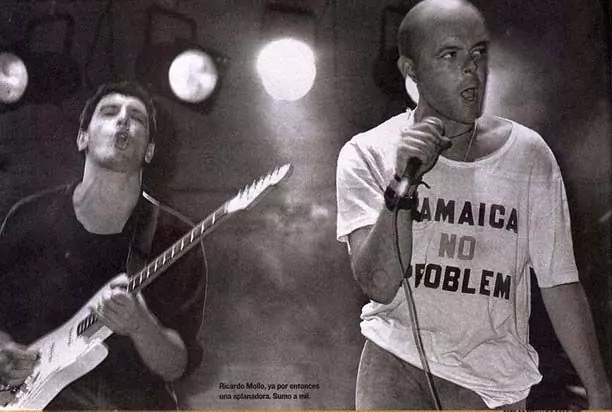
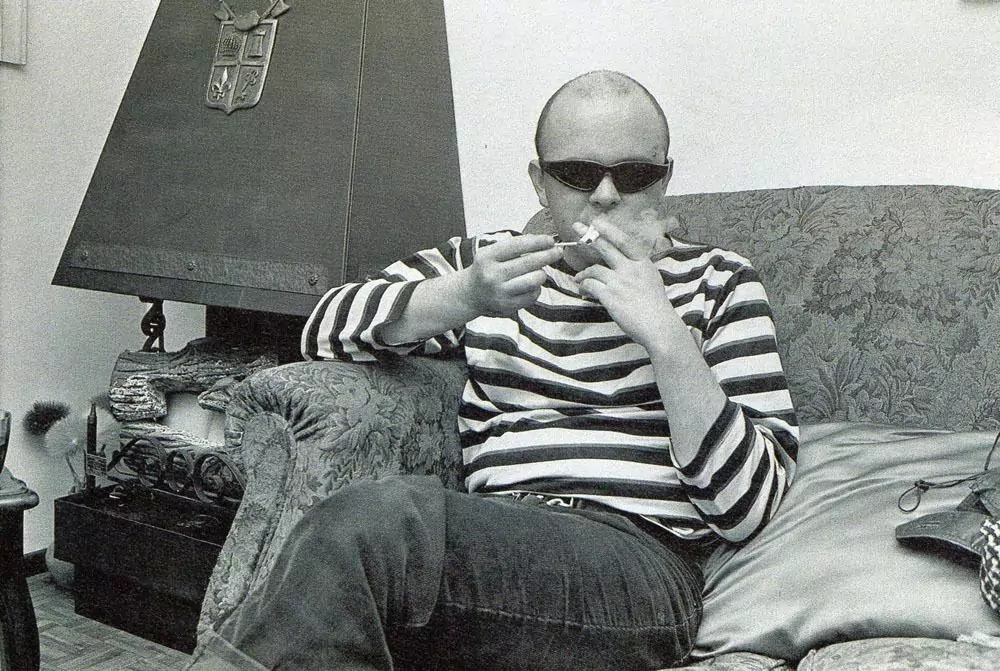
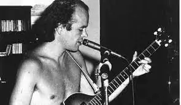
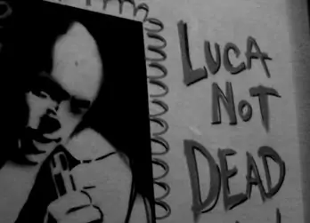